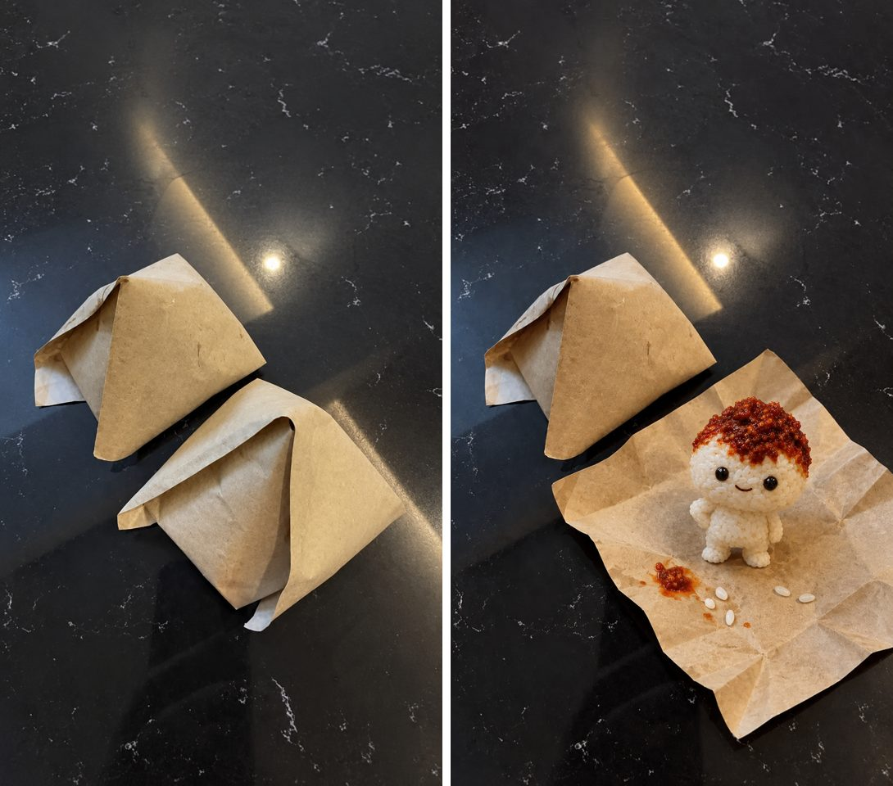

阿旺的 Prompt 库← 全部视频
阿旺的 Prompt 库← 全部视频一张手机随手拍的纸包照片，变成会自己跳出来、还会讲话的饭团角色。下面是我实际用的全部 prompt 和设定，你家卖什么，换成你的产品照样能拍。

左：手机随手拍（首帧） 右：GPT 合成的尾帧
做产品片，观众要认得出是你家的东西。所以永远先有图，再生成视频，不要只丢文字。
开一个新的 GPT 对话，上传你的照片，贴上这段：
Extend this exact photo to a 9:16 vertical image and make it sharper and higher resolution. Keep everything that is already in the photo the same: the two brown paper nasi lemak packets, their folds, positions and size, the black glossy speckled table, the small white crumbs on the table. Add only more of the same black table above the packets, so the packets sit in the lower third of the frame and there is empty table space above them. Also extend a little at the bottom. Lighting must stay exactly as in the original: one indoor ceiling light above and slightly behind the packets, reflecting as a bright spot on the glossy black table; the tops of the packets are brighter, the sides facing the camera are slightly darker. No new light sources, no extra reflections, no window light. Must look like a real phone photo: slight grain, natural, not CGI, not over-smoothed. No text, no logos, no hands, no people.
你的照片光线不一样的话，把 Lighting 那一段改成你照片里真的看到的光。这一句写错，后面每一步都会歪。
再开一个新对话，不用放图，直接贴：
Create a character reference image: ONE character shown from two angles side by side — left: front view, right: 3/4 view. Same character, same size, same pose, both full body. Landscape 3:2. Plain light grey seamless background. No text, no labels, no logos. Character: a small cute nasi lemak creature, about the size of a fist. Its body is a rounded mound of real cooked coconut rice — individual rice grains clearly visible, slightly glossy, real food texture, not plastic, not clay. On top of its head sits a messy dollop of dark red sambal like hair, real oily sambal texture with chili flakes. Two small round glossy black eyes and a small closed-mouth confident smile (mouth closed, no teeth). Two short stubby arms made of the same rice, one hand on its hip. Short stubby rice legs. Nothing else — no egg, no cucumber, no peanuts, no clothes, no props. Style: cute stylized proportions (big head, small body) but every material must look like real photographed food, like premium food photography. Not a cartoon drawing, not CGI-shiny. Lighting: one warm-white indoor ceiling light above and slightly in front of the character. Top of the sambal and rice has soft highlights; lower body slightly darker; soft contact shadow under the feet. No rim lights, no colored lights, no extra light sources. Both views lit identically.
换成你的产品：把 Character 那段的材料换掉，比如咖啡粉做身体、辣椒酱当头发。重点是「用真的食物材质」，不要卡通，不然放回真照片里会很假。
开一个新对话，上传两张图，顺序不能错：
Image 1第 2 步补好的 9:16 照片Image 2第 3 步的角色设定图Image 1 is a real phone photo. Image 2 shows ONE character from two angles (front and slightly turned) — it is the same single character, not two. Edit Image 1 only as follows, keeping it a 9:16 real phone photo with the exact same camera angle, table, crumbs, reflections and light: 1. The FRONT (lower-right) paper packet is now unfolded open: its brown paper lies opened flat on the table, the folds and creases still visible, with a small smear of red sambal and a few loose rice grains on the paper. Nothing else inside the paper. 2. The character from Image 2 stands on the opened paper, facing the camera, full body visible, about as tall as the closed packet was. One hand on its hip, closed-mouth confident smile, eyes looking at the camera. Same rice texture, same sambal hair, same black eyes as Image 2. 3. The BACK (upper-left) packet stays exactly as it is — closed, unchanged. Lighting stays exactly as in Image 1: one warm-white indoor ceiling light above and slightly behind the packets, the same bright spot reflection on the black table. The top of the character's sambal hair catches that light; the side of the character facing the camera is slightly darker but the face is still clearly readable. A soft contact shadow and a faint reflection of the character on the glossy table. No new light sources. Must still look like a real phone photo, not CGI. No text, no logos, no hands, no people.
用首尾帧模式上传：
Start第 2 步补好的照片（纸包还没打开）End第 4 步的尾帧（角色站在纸上）A real phone video. The start frame is a real photo of two closed brown paper nasi lemak packets on a black glossy speckled table. The end frame shows the front packet opened flat with a small rice-and-sambal character standing on it. Animate the change between them. 0.0–1.0s: Everything still. Both packets closed. Only a tiny paper tremble on the FRONT (lower-right) packet. 1.0–2.5s: The front packet's paper flaps pop open by themselves one at a time and fall outward, unfolding flat onto the table. Real paper with weight: creases stay visible, edges settle with a small bounce. 2.5–3.5s: From inside the opened paper, the small character springs up in one quick hop and lands on the paper with a soft squash and settle. A few rice grains and a tiny drop of sambal scatter onto the paper. 3.5–5.0s: The character steadies itself, raises one hand, looks straight at the camera with a small closed-mouth confident smile, and holds still. Ends exactly matching the end frame. The BACK (upper-left) packet never moves, stays closed the whole time. Character: body of real cooked white rice with visible grains, messy dark red oily sambal on its head like hair, two small glossy black eyes, small closed-mouth smile. Same size throughout. Mouth stays closed. No big poses, no dancing, no waving arms around. Lighting (fixed, exactly as the start frame): one warm-white indoor ceiling light above and slightly behind the packets, reflecting as one bright spot on the black table. Tops of the paper and the character's sambal catch the light; sides facing the camera are slightly darker. Soft contact shadows. No new light sources, no light changes, no flicker. Camera: completely locked off, same angle as the start frame for all 5 seconds. No zoom, no pan, no tilt, no reframing, no drift. Look: real handheld-phone footage of a real table, natural, not CGI, not cartoon render, not glossy. No text, no logos, no hands, no people. No music.
5 秒 720p 大约 2.5 credit。我这条中间「跳起来」那不到 1 秒有点乱（角色突然变大、脸看不见），不用重抽：剪掉那一段，直接从「探头」跳切到「站好」，加一个 pop 音效，反而更有节奏。
先用 GPT 换一个贴着桌面的低机位近景当首帧。开新对话，上传两张图：Image 1 第 4 步的尾帧，Image 2 角色设定图。
Image 1 is a real phone photo of a scene. Image 2 shows ONE character from two angles — the same single character, not two. Make a new 9:16 photo of the SAME scene from a different camera position: the camera is now very low, almost at table level, about 25 cm in front of the character, looking straight at it. Close-up: the character fills the lower two-thirds of the frame, head to feet visible, standing on the same crumpled brown paper. Telephoto look: shallow depth of field, the character is sharp, the background is soft and blurred. Background (blurred): the black glossy speckled table, the closed brown paper packet as a soft blurred shape on the left behind the character, and the bright ceiling-light reflection on the table as a soft round glow behind the character's head on the right. Character: exactly as Image 2 — real cooked white rice body with visible grains, messy dark red oily sambal on its head, two small glossy black eyes, small closed-mouth smile. One hand resting on its hip. Looking straight into the camera. Lighting: the same single warm-white ceiling light as Image 1, now above and slightly behind the character: the top of the sambal hair has a warm bright edge; the face is in soft gentle shadow but clearly readable, lifted a little by light bouncing off the paper below. No new light sources, no front fill light. Must look like a real macro phone photo of real food, not CGI, not a cartoon render. No text, no logos, no hands, no people.
再丢进 Kling 4.0：
A real macro phone video, continuing exactly from the start image: a small character made of real cooked white rice with messy dark red oily sambal on its head, standing on crumpled brown paper on a black glossy table, low camera at table level, shallow depth of field, blurred paper packet on the left and a soft round light glow behind its head on the right. 0.0-0.8s: The character stands still, looking straight into the camera. 0.8-1.4s: It puts one stubby rice hand on its hip and lifts its chin slightly, proud and a little cheeky. 1.4-3.8s: It speaks one line straight to the camera, mouth opening only small and cute, never wide: "Sambal 我自己炒的，辣死你哦。" Spoken in Mandarin Chinese with a Malaysian Chinese accent, a small, bright, cheeky voice, confident like a proud hawker. No other words. 3.8-5.0s: After the line it gives one small smug head tilt to one side, closes its mouth into a small smile, and holds still looking at the camera. Only this one character moves. Its feet stay planted on the paper, no jumping, no walking, no dancing, no big arm movements. The rice grains on its body stay in place; the sambal hair wobbles very slightly once when it tilts its head, then settles. Lighting (fixed, exactly as the start image): one warm-white ceiling light above and slightly behind the character, giving a warm bright edge on the top of the sambal hair and the soft round glow in the blurred background; the face is evenly visible with gentle soft light bounced from the paper below. No new light sources, no light changes, no flicker. Camera: locked off, low at table level, same framing as the start image for the whole shot. No zoom, no pan, no tilt, no drift. Background stays blurred. Audio: only the character's one spoken line and a tiny soft paper rustle. No music, no background voices. Look: real macro phone footage of real food, natural texture, not CGI, not a cartoon render. No text, no subtitles, no logos, no hands, no people.
台词换成你产品的卖点就好，一句就够，越短嘴型越稳。写明「嘴巴小小地开、不要张大」，不然很容易变成张大嘴的假笑。
用下面的链接注册，登录后会有最高 5 折的个人折扣。
这是推广链接，你通过它订阅的话，阿旺会拿到一点佣金，你的价格不会变贵。折扣在登录后 3 小时内有效，建议先想好要哪个方案再点。